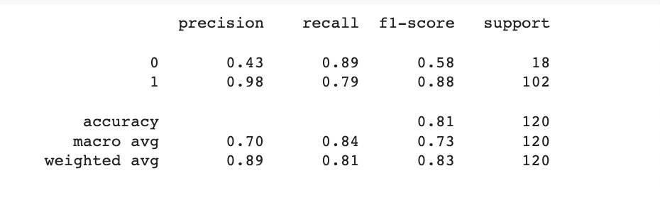

Loan Status Prediction using Support Vector Machine: A Data-driven Approach for Financial Decision Making
Introduction
The aim of this project is to develop a machine learning model that predicts housing prices in California based on the California housing dataset. The dataset contains various features related to houses in different locations across California, such as median income, house age, average number of rooms and bedrooms, population, and geographical coordinates.
Data Description
The dataset used for this project is obtained from Kaggle and is titled "Loan Predication." It consists of historical loan application data with several input features and the corresponding loan status for each application. The dataset provides valuable information such as the applicant's income, credit history, employment status, loan amount, and other relevant factors. The loan status column indicates whether the loan application was approved or rejected.
The provided dataset contains information related to loan applicants in the insurance domain. It consists of 615 rows and 13 columns, representing various customer details and loan-related variables. The dataset aims to facilitate the automation of the loan eligibility process based on the information provided by customers while filling out the online application form.
The features present in the dataset are as follows:
Gender: This column represents the gender of the loan applicant (Male or Female).
Marital Status: This column indicates the marital status of the applicant (Married, Single, Divorced, or Widowed).
Education: This column describes the educational background of the applicant (Graduate or Not Graduate).
Number of Dependents: This column denotes the number of dependents the applicant has (0, 1, 2, or 3+).
Income: This column represents the applicant's income in monetary units.
Loan Amount: This column specifies the loan amount applied for by the customer.
Credit History: This column indicates the credit history of the applicant (1 denotes a good credit history, 0 denotes a bad credit history).
Property Area: This column describes the location of the property for which the loan is being applied (Rural, Semiurban, or Urban).
Loan Status: This column represents the final status of the loan application (Y denotes approved, N denotes rejected).
Project Steps
Data Acquisition: Obtain the loan dataset from the provided source (e.g., Kaggle). Download the dataset or load it directly into your programming environment.
Data Exploration: Perform an initial exploration of the dataset to understand its structure, features, and potential challenges. Examine the columns, check for missing values, and gain insights into the distribution and characteristics of the data.
Data Preprocessing: Clean the dataset by handling missing values, outliers, and any inconsistencies. Convert categorical variables into numerical representations using techniques such as one-hot encoding or label encoding. Normalize or scale numerical features if necessary.
Exploratory Data Analysis (EDA): Conduct a comprehensive analysis of the dataset to understand the relationships between variables. Visualize the data using plots, histograms, and statistical summaries to gain insights into patterns, correlations, and potential influential factors.
Feature Engineering: Identify opportunities for feature engineering, such as creating new features based on domain knowledge or combining existing features to capture additional information. This step can help enhance the predictive power of the model.
Data Split: Split the dataset into training and testing sets. The training set will be used to train the SVM model, while the testing set will evaluate its performance and generalization.
Model Development: Choose the SVM algorithm for loan status prediction. Define the appropriate SVM kernel (e.g., linear, polynomial, or radial basis function) and tune the hyperparameters to optimize the model's performance. Fit the SVM model on the training data.
Model Evaluation: Evaluate the trained model using various evaluation metrics, including accuracy, precision, recall, F1-score, and confusion matrix. Analyze the results to assess the model's performance in predicting loan statuses.
Classification Report

The evaluation metrics provide insights into the performance of the SVM model for loan status prediction. Here is an analysis of the metrics:
Precision: Precision is a measure of the model's ability to correctly identify positive predictions (loan applications approved) out of the total predicted positive cases. The precision for class 0 (rejected loans) is 0.43, indicating that 43% of the predicted rejected loans were correct. For class 1 (approved loans), the precision is 0.98, indicating a high level of accuracy in identifying approved loans.
Recall: Recall, also known as sensitivity or true positive rate, measures the model's ability to identify the actual positive cases (loan applications approved) out of the total positive cases. The recall for class 0 is 0.89, indicating that the model successfully identified 89% of the actual rejected loans. The recall for class 1 is 0.79, indicating that the model captured 79% of the actual approved loans.
F1-score: The F1-score is the harmonic mean of precision and recall, providing a balanced measure of the model's accuracy. The F1-score for class 0 is 0.58, which indicates a moderate balance between precision and recall for rejected loans. For class 1, the F1-score is 0.88, indicating a high level of accuracy and balance between precision and recall for approved loans.
Support: The support column represents the number of samples in each class (0 and 1). In this case, there are 18 samples for class 0 (rejected loans) and 102 samples for class 1 (approved loans).
Accuracy: The overall accuracy of the model is 0.81, indicating that the model correctly classified 81% of the loan applications in the testing set.
Macro Avg: The macro average calculates the average performance of the model across both classes, giving equal weight to each class. The macro average precision, recall, and F1-score are 0.70, 0.84, and 0.73, respectively.
Weighted Avg: The weighted average calculates the average performance, considering the number of samples in each class. The weighted average precision, recall, and F1-score are 0.89, 0.81, and 0.83, respectively.
Overall, the model shows reasonably good performance in predicting loan status. It achieves high precision, recall, and F1-score for approved loans (class 1), indicating its effectiveness in identifying successful loan applications. However, there is room for improvement in accurately identifying rejected loan applications (class 0), as indicated by the lower precision, recall, and F1-score.
Conclusions
In this project, I developed a Support Vector Machine (SVM) model to predict the loan status of applicants based on various customer details. The model was trained on a dataset containing information such as gender, marital status, education, income, loan amount, credit history, and property area.
After evaluating the SVM model's performance on a testing set, I observed the following results: The model achieved a reasonably high accuracy of 81%, correctly classifying 81% of the loan applications. The precision for approved loans (class 1) was 0.98, indicating a high level of accuracy in identifying successful loan applications. However, the precision for rejected loans (class 0) was lower at 0.43, suggesting room for improvement in accurately identifying rejected loan applications.
The recall for rejected loans was 0.89, indicating that the model successfully identified 89% of the actual rejected loans. The recall for approved loans was 0.79, suggesting that the model captured 79% of the actual approved loans. The F1-score, which balances precision and recall, was 0.58 for rejected loans and 0.88 for approved loans.
Overall, the SVM model demonstrated good performance in predicting loan statuses, particularly for approved loans. However, there is a need for further improvement in correctly identifying rejected loan applications. This can be achieved through refining the model, exploring additional feature engineering techniques, or employing more advanced machine learning algorithms.
The developed SVM model provides a foundation for automating the loan eligibility process, allowing the company to target specific customer segments eligible for loan amounts. By leveraging data science and analytics, financial institutions can streamline their loan approval processes, reduce manual effort, and make informed decisions while improving operational efficiency and customer satisfaction.
Further enhancements and iterations can be made to the model, such as collecting additional data, refining the feature selection process, or exploring ensemble methods. Continual monitoring and updating of the model will ensure its effectiveness in adapting to changing customer behaviors and market dynamics.
Overall, this project highlights the significance of analytics and data science in the insurance industry, specifically in automating loan eligibility processes. By leveraging the power of machine learning algorithms like SVM, financial institutions can make data-driven decisions, enhance risk assessment, and optimize resource allocation, ultimately leading to improved operational efficiency and better customer experiences.